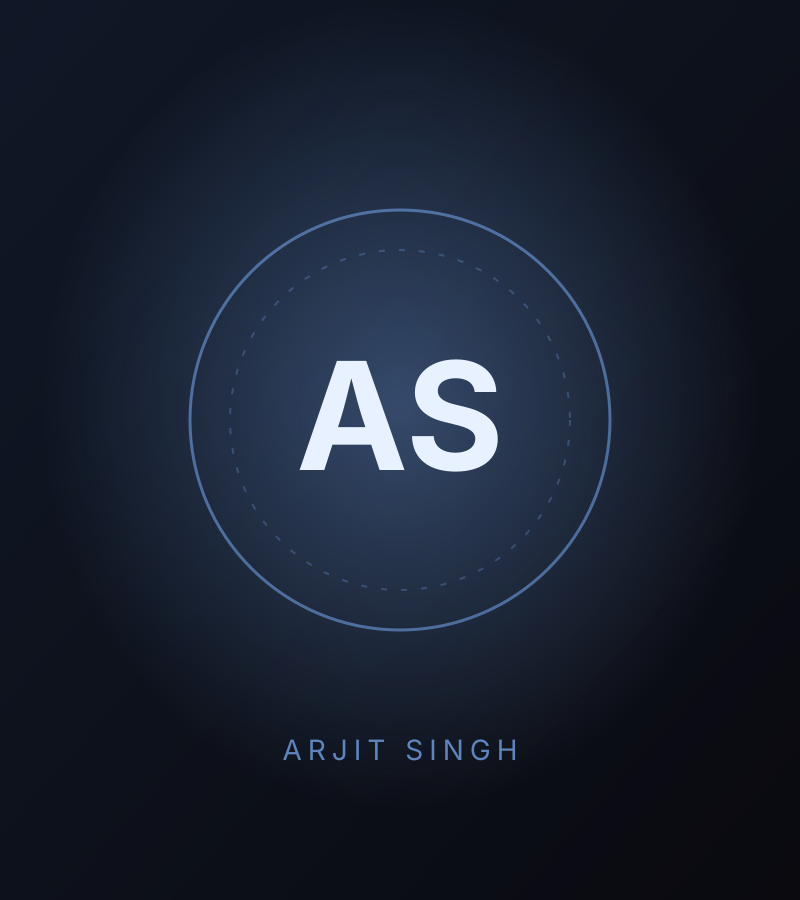
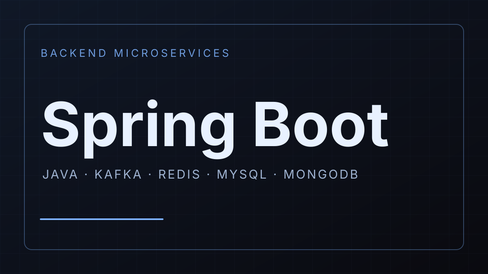
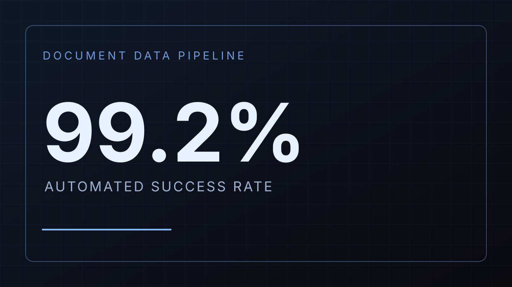
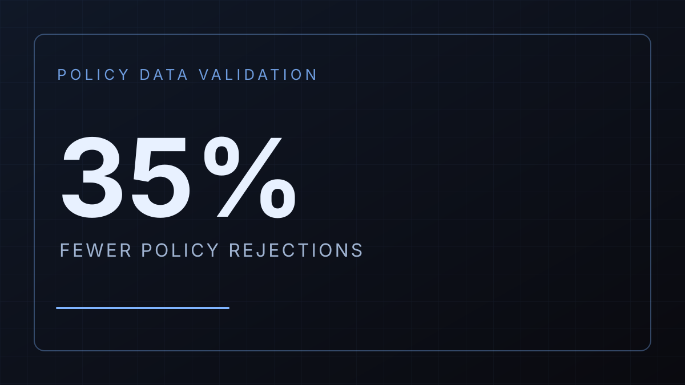
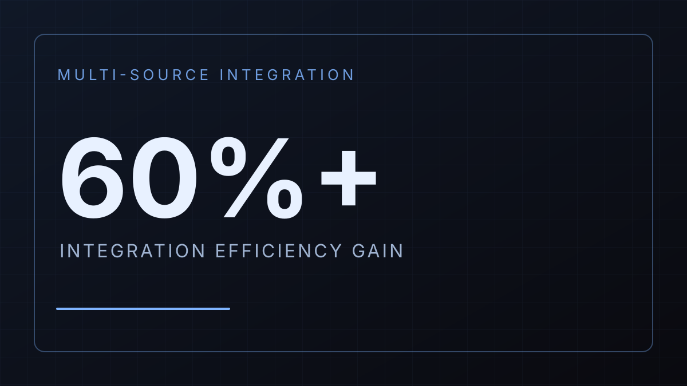

Hi, I'm Arjit Singh
Java & Spring Boot
0
Years Experience
0
Key Workstreams
0
Tools & Skills
About Me

Hi, I'm Arjit Singh.
I'm a Java-focused software professional who builds and supports reliable backend services, integrations and data-processing workflows in insurance technology.
Java & Spring Boot
Kafka & Redis
SQL & MongoDB
LLM-Assisted Workflow
With 3 years of experience building Spring Boot services, REST APIs and integrations, I am hands-on with Kafka, Redis, SQL/NoSQL databases and production troubleshooting. I use LLM-powered tools and structured prompting for coding, debugging, documentation and rapid prototyping.
Let's build dependable systems that ship.
Work Experience
Career snapshot 2023–Present From insurance backend systems to AI-assisted solutioning, building dependable services and turning business needs into technical delivery.
Technical Analyst
NexusolveCore tools & expertise
- Requirements Analysis
- Cursor
- Lovable
- AI-assisted Prototyping
- LLM-assisted Coding
- Prompt Engineering
- Stakeholder Coordination
Contributions & outcomes
4 contributionsRequirements to solution
Worked with stakeholders to understand business workflows, clarify functional needs and constraints, and turn them into actionable technical requirements and solution approaches.
AI-assisted prototyping
Used Cursor and Lovable to build proofs-of-concept from workflow descriptions, iterating on prompts and outputs to shape UI flows, validate ideas and speed up stakeholder feedback.
LLM-assisted workflow
Used AI coding assistants for code exploration, implementation suggestions, debugging support and technical documentation, and reviewed, tested and adapted generated output before use.
Delivery coordination
Tracked dependencies, timelines and deliverables across engineering, product and customer-facing discussions, and identified adjacent workflow needs to support solution expansion.
Assistant Manager
Star Health and Allied Insurance Co. Ltd.Core tools & expertise
- Java
- Spring Boot
- REST APIs
- Kafka
- Redis
- MySQL
- MongoDB
- SFTP
- UAT
Contributions & outcomes
5 contributionsBackend microservices & document processing
Worked on Spring Boot microservices for insurance proposal, policy and document-processing workflows using Java, REST APIs, MongoDB, MySQL, Kafka, Redis and SFTP-based integrations.
Document data pipeline
Found a manual document-upload bottleneck causing daily discrepancies; defined SLA targets, validation rules and fault-tolerance requirements, and ran UAT before rollout. Contributed to a 99.2% automated success rate and 80% less manual processing.
Policy data validation
Worked with underwriting and engineering to translate business rules into a structured validation engine, using MySQL/SQL to find anomalies and trends. Contributed to a 35% reduction in policy rejections.
API orchestration & integration
Scoped an API orchestration layer for retail and group insurance flows, analysed transaction failures across data sources and supported fixes that improved integration efficiency by 60%+.
Production reliability & reporting
Supported data transformation, validation, integration and UAT cycles, and built operational dashboards using SQL and MongoDB data, with Excel summaries for business stakeholders.
Featured Work
Selected workstreams from my time at Star Health: backend services, data pipelines, validation and integrations.

Backend Microservices & Document Processing
- Worked on Spring Boot microservices for insurance proposal, policy and document-processing workflows.
- Used Java, REST APIs, MongoDB, MySQL, Kafka, Redis and SFTP-based integrations.
- Supported data transformation, validation, integration and UAT cycles, and built SQL/MongoDB dashboards with Excel summaries for business teams.

Document Data Pipeline
- Identified a manual document-upload bottleneck that caused daily data discrepancies.
- Defined SLA targets, data-validation rules and fault-tolerance requirements, and ran UAT and validation cycles before rollout.
- Results: contributed to a 99.2% automated success rate and an 80% reduction in manual processing.

Policy Data Validation
- Worked with underwriting and engineering teams to translate business rules into a structured validation engine.
- Used MySQL/SQL to identify data anomalies and flag trends.
- Results: contributed to a 35% reduction in policy rejections.

API Orchestration & Integration
- Scoped an API orchestration layer for retail and group insurance flows.
- Analysed transaction failures across data sources and identified root causes.
- Results: supported fixes that improved integration efficiency by 60%+.
Technical Skills
Programming & Backend
- Java
- Spring Boot
- Microservices
- REST APIs
- Apache Kafka
- Redis
Databases & Data
- MySQL
- MongoDB
- SQL
- Data Analysis
Generative AI & LLMs
- Prompt engineering & iteration
- LLM-assisted coding/debugging
- Cursor
- Lovable
- Foundational: LLM APIs, Spring AI concepts, embeddings, vector databases, RAG, tool/function calling
Tools & Delivery
- Git
- Postman
- Linux
- Docker (basic)
- Grafana
- Excel
- UAT & regression testing
- Agile/Scrum
- JIRA
- Requirement analysis
Publications & Patents
INCET 2023
Oghma Nano Simulation of PM6:D18:L8-BO Organic Cell with other Lesser Efficient Solar Cells
Simulation study to improve PM6:D18:L8-BO organic solar cell efficiency, compared with D18:L8-BO, P3HT:PCBM and PM6:L8-BO cells.
Patent Application
A Mobile Application Based Portable eSIM Integrated GPS Device for Tracking Things, called Quito Trackers
Compact eSIM + GPS tracker with a mobile app to locate belongings in real time.
Patent Application
A Solution for Parking Spaces Using a Smart System called ORDO
Smart parking system using sensors, cloud and AI-based pricing, with an app to book and pay.
IRIS
Intelligent Responsive Interface System
Llama 3.1